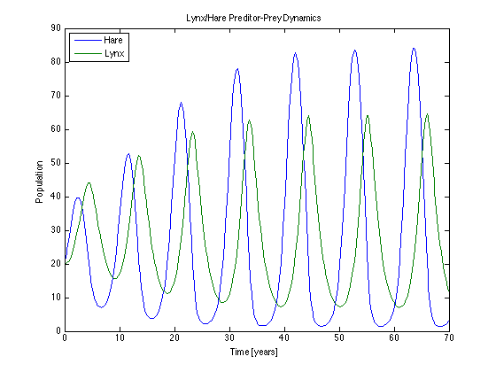

Lynx-Hare Predator-Prey Model -- Linearization and Control
File: Ch04_PreditorPrey.m
Preditor-Prey population models provide a rich source of fascinating models exhibiting oscillatory behavior, multiple steady states, and other features. In the example, we model a population of Lynx (L) that feed on Hare (H).
Contents
function PredatorPrey
Parameter values
a = 3.2; b = 0.6; c = 50; d = 0.56; k = 125; r = 1.6;
Model Equations
dH = @(H,L) r*H*(1-H/k) - a*H*L/(c+H); dL = @(H,L) b*a*H*L/(c+H) - d*L;
Model in format suitable for ODE45
deriv = @(x) [dH(x(1),x(2)); dL(x(1),x(2))]; % Simulate tspan = [0 70]; ic = [20;20]; [t,x] = ode45(@(t,x)deriv(x), tspan, ic); % Diplay results plot(t,x); xlabel('Time [years]'); ylabel('Population'); title('Lynx/Hare Preditor-Prey Dynamics'); legend('Hare','Lynx','Location','NW');
Steady State
xss = fsolve(deriv,ic);
displaytable(xss,{'Hss','Lss'})
addplot(t,xss(1),t,xss(2));
Equation solved. fsolve completed because the vector of function values is near zero as measured by the default value of the function tolerance, and the problem appears regular as measured by the gradient. Hss 20.588 Lss 29.481
Undefined function 'addplot' for input arguments of type 'double'. Error in Ch04_PredatorPrey (line 50) addplot(t,xss(1),t,xss(2));
Population Control
Can we stabilize the populations? Suppose we authorize the hunting of lynx. What control policy would stabilize the populations?
dH = @(H,L,u) r*H*(1-H/k) - a*H*L/(c+H) - u*H;
dL = @(H,L,u) b*a*H*L/(c+H) - d*L;
% Model in format suitable for ODE45
f = @(x,u) [dH(x(1),x(2),u); dL(x(1),x(2),u)];
g = @(x,u) x(1);
Get State Space Model
A = jacobian(@(x)f(x,0),xss); B = jacobian(@(u)f(xss,u),0); C = jacobian(@(x)g(x,0),xss); D = jacobian(@(u)g(xss,u),0); sys = tf(ss(A,B,C,D))
Stabilization by Proportional Feedback Control
Kp = -0.05; u = @(x) Kp*(xss(1) - x(1)); ode45(@(t,x)f(x,u(x)),tspan,ic);
end
Numerical Computation of a Jacobian
% JACOBIAN Estimates the Jacobian of a vector function % % A = JACOBIAN(f,x0) Jacobian of f evaluated at x0 % % This function uses lsqnonlin from the optimization toolbox to estimate % the jacobian. This trick was suggested in the MathWorks support website % % http://www.mathworks.com/support/solutions/en/data/1-CMM53T/index.html?product=OP&solution=1-CMM53T % % with additional corrections suggested in % % http://www.mathworks.com/matlabcentral/answers/28066-numerical-jacobian-in-matlab function A = jacobian(f,x0) [~,~,~,~,~,~,A] = lsqnonlin(f,x0,[],[],optimset('MaxFunEvals',0)); A = full(A); end